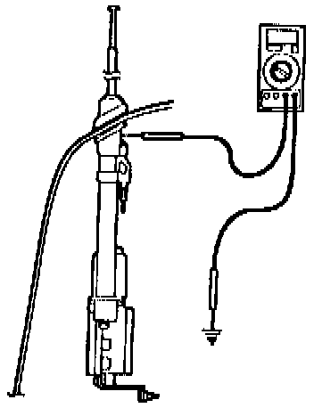

Diagnosis 2. Electrical Noise or Interference
1. Disconnect the coaxial cable from the antenna.
2. Measure the resistance between the antenna collar and body ground.
^ If the resistance is more than 1 ohm, go to CORRECTIVE ACTION, Antenna Collar Replacement.
^ If the resistance is less than 1 ohm, go to Power Antenna Coaxial Cable Test.